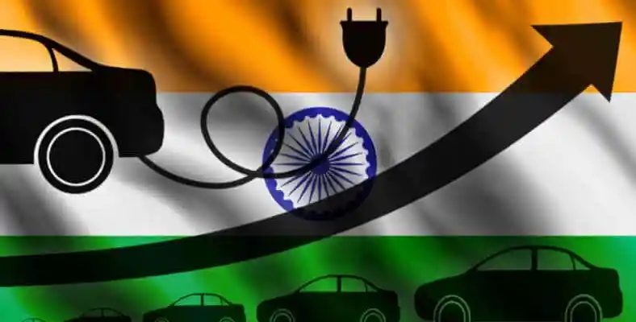
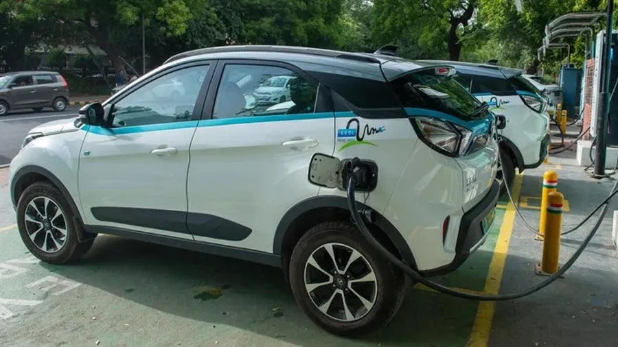
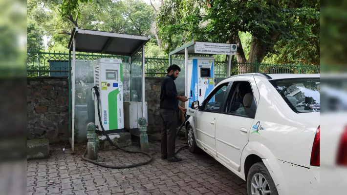

India's electric vehicle (EV) market is experiencing rapid growth, driven by a combination of environmental concerns, technological advancements, and supportive government initiatives. As the country strives to reduce its carbon footprint and transition to sustainable mobility, the importance of strategic investment in this sector becomes increasingly evident. Investors looking to capitalize on the burgeoning EV market must adopt informed and strategic approaches to navigate its dynamic landscape effectively.
Understanding the Indian EV Landscape
Key Drivers of EV Adoption in India
The adoption of electric vehicles in India is influenced by several key factors:
- Environmental Benefits and Government Mandates: The Indian government has set targets for EV adoption, aiming for significant reductions in carbon emissions and increased reliance on renewable energy sources.
- Increasing Consumer Awareness and Demand: As environmental concerns rise, consumers are becoming more aware of the benefits of EVs, leading to increased demand.
- Innovations in Battery Technology and Charging Infrastructure: Advances in battery technology and the expansion of charging infrastructure are making EVs more accessible and appealing to consumers.
Government Policies and Incentives
The Indian government has implemented various policies to promote EV adoption, including:
- FAME (Faster Adoption and Manufacturing of Hybrid and Electric Vehicles): This initiative provides financial incentives for both manufacturers and consumers to encourage the adoption of EVs.
- Production Linked Incentive (PLI) Schemes: These schemes aim to boost domestic manufacturing of EV components and promote local production.
- Tax Benefits and Subsidies: Various tax incentives and subsidies are available for both manufacturers and buyers, further enhancing the attractiveness of EV investments.
Challenges and Opportunities in the Market
While the EV market presents numerous opportunities, it also faces challenges:
- Infrastructure Gaps: The lack of sufficient charging stations remains a significant barrier to widespread adoption.
- High Initial Costs vs. Long-Term Savings: Although EVs can offer long-term savings, their initial purchase price can deter potential buyers.
- Growth Opportunities: There is significant potential for growth in both urban and rural markets, particularly as consumer preferences shift toward sustainable transportation options.

Investment Strategies
Identifying Promising EV Companies
Investors should focus on identifying companies that demonstrate strong potential for growth:
- Startups vs. Established Players: Evaluating the benefits of investing in emerging startups versus established companies with proven track records can help investors make informed decisions.
- Technology Focus: Companies specializing in battery manufacturing, charging infrastructure, and software solutions are likely to benefit from the ongoing technological advancements in the sector.
- Growth Potential and Market Share: Identifying companies with significant market share and robust growth prospects is crucial for maximizing investment returns.
Evaluating Investment Risks
Understanding the risks associated with investing in the EV sector is essential:
- Regulatory Changes: Investors must stay informed about potential shifts in government policy that could impact their investments.
- Technological Advancements: Keeping abreast of technological changes is vital, as they can disrupt existing market dynamics or create new opportunities.
- Competition and Market Dynamics: Analyzing the competitive landscape will help investors gauge how market dynamics may influence their investment outcomes.
Diversification
To mitigate risks, investors should consider diversifying their portfolios:
- Investing in Various EV Segments: Spreading investments across different segments, such as two-wheelers, four-wheelers, and commercial vehicles, can enhance portfolio resilience.
- Geographic Diversification: Investing in different regions within India can help mitigate regional risks and capitalize on local growth opportunities.

Due Diligence and Risk Mitigation
Thorough Company Analysis
Conducting comprehensive analyses of potential investment targets is crucial:
- Financial Performance: Assessing the financial health of companies is essential for understanding their viability.
- Management Team: Evaluating the experience and vision of the leadership team can provide insights into the company's future prospects.
- Intellectual Property: Reviewing the company’s patents and technological edge is important for understanding its competitive advantage.
Risk Assessment
Investors should be aware of various market risks:
- Market Risks: Understanding market volatility and consumer adoption rates is essential for making informed investment decisions.
- Technological Risks: Considering the potential for technological obsolescence is crucial in a rapidly evolving sector.
- Operational Risks: Evaluating risks related to supply chains, production capabilities, and scalability can help investors identify potential challenges.
Legal and Regulatory Considerations
Ensuring compliance with legal requirements is vital:
- Compliance with Indian Laws: Investors must ensure that companies adhere to all relevant legal standards.
- Intellectual Property Protection: Safeguarding innovations is crucial for maintaining a competitive edge in the market.
Long-Term Investment Outlook
Potential Returns and Growth
The Indian EV market is projected to witness substantial growth:
- Market Projections: The market is expected to grow significantly, with estimates suggesting it could reach USD 150.2 billion by 2032, reflecting a compound annual growth rate (CAGR) of approximately 25.1% from 2023 to 2032.
- Expected Returns on Investment: Investors can anticipate potential ROI based on the expected market growth and company performance.

Sustainable Investing
Aligning investments with environmental and social goals is increasingly important:
- Importance of Sustainability: Investing in companies that prioritize sustainability and social responsibility can enhance long-term value and contribute to broader societal goals.
Conclusion
As the EV market continues to grow, informed and strategic investment decisions will be key to capitalizing on the opportunities presented by this transformative sector. Investors are encouraged to conduct thorough research and make well-informed decisions to navigate the evolving landscape of India's electric vehicle market successfully.
SMD Dive into India's electric vehicle revolution! This article explores the rapid growth of the EV market, driven by government support and technological advancements. Discover key investment strategies, challenges, and opportunities in this dynamic landscape. Don't miss out on the future of sustainable mobility!